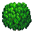
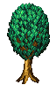
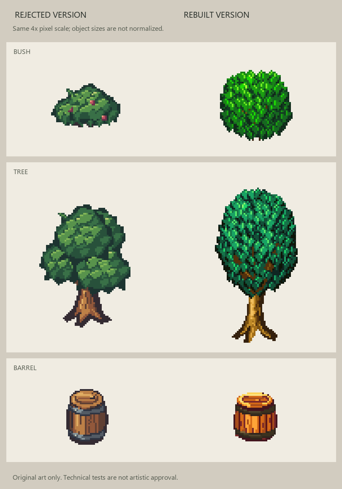

Bush

Rebuilt leaf structure, warm bark and convex staves. Earlier examples were rejected for style mismatch and remain available for comparison.



Remaining differences include a more regular canopy and simpler bark/grain. No claim of artist-level equivalence or human approval.